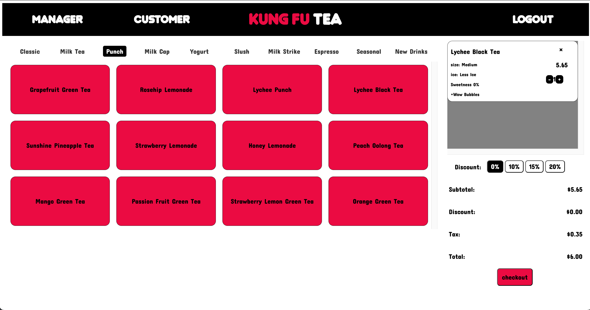

I've had about five years of experience working with various computing platforms and applications, and I hope to continue learning how to use even more technologies. Exploring various aspects of Computers and technology has always been my aspiration, and I'm glad I've had the opportunity to do so from several learning experiences. Computers and their functions have always been a fascination of mine, and I've appreciated being able to study various coding languages, software applications, and hardware concepts associated with their design and construction as they relate to computing. It's truly been a joy to research all the vast departments and concentrations that span this concept. However, at the moment I've narrowed my interests down to a set of specific aspects of computing that are significantly influential in today's society. My discoveries and explorations have shifted toward interactive applications, virtual reality, and artificial intelligence. I would love the opportunity to interact with these technologies and experiment with ideas of how they can be applied to fields within art, humanities, and health. Also, I'd like the opportunity to witness how much depth the field of Computer Science has beyond the zone of functionality. Concepts such as VR arcades, simulation ride parks at Universal Studios, the 4DX theater experience, and other areas of progression are ways Computer Science has extended to entertainment. I believe there are technical components that could be beneficial in multiple and uncommon areas of concentration. Upon completing my Bachelor's Degree, I hope to receive a master's in Information Technology and combine my experiences from Computer Science with it to lead me into a promising career field. I aspire to follow a career path in Information Technology where I can either manage these types of technologies or be involved in their front-end development process.
Guess Accessories
Stein Mart
| Course | Description |
|---|---|
| Software Engineering | Intensive programming experience and provision of the fundamentals needed for larger-scale software development; integration of concepts in computer science and familiarization with a variety of programming and development tools and techniques; team projects each with an emphasis on a different specialization within computer science; emphasis on programming techniques to ease code integration and clarity; practical exposure to software-engineering processes through large-scale projects and specification and documentation. |
| Data Structures | Specification and implementation of basic abstract data types and their associated algorithms including stacks, queues, lists, sorting and selection, searching, graphs, and hashing; performance tradeoffs of different implementations and asymptotic analysis of running time and memory usage; includes the execution of student programs written in C++. |
| Computer Systems | Introduction to system support for application programs, both on single node and over network including OS application interface, inter-process communication, introduction to system and network programming, and simple computer security concepts; hands-on lab assignments. |
| Discrete Structures | Mathematical foundations from discrete mathematics for analyzing computer algorithms, for both correctness and performance; introduction to models of computation, including finite state machines and Turing machines. |
| Programming Languages | Exploration of the design space of programming languages via an in-depth study of two programming languages, one functional and one object-oriented; focuses on idiomatic uses of each language and on features characteristic for each language. |
Bubble Tea POS System
The purpose of this project was to create a POS system for Bubble Tea that could serve a variety of personas and user stories. Our commitment for this project was to make a more accessible version of a POS system that included different accessibility accomodations and features like light and dark modes, text translation, and enlarged text.
Visit SCAD's Kung Fu Tea